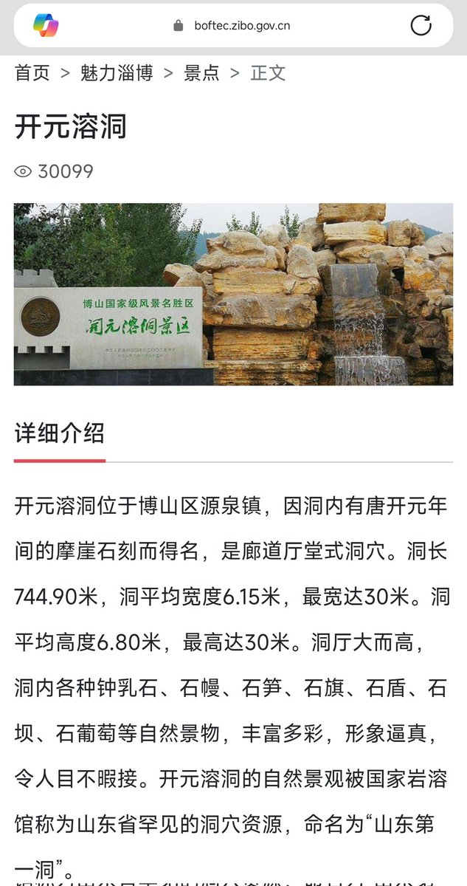

水母雨🍥
@ena1_mizuki
@dissolvingspace 喔~原来是这样的，溶于世界感觉好棒哇，好听的名字，是在淄博呀我还以为在西南，我去山东挺多的，有机会去看看~

小溶🏳️⚧️🍥
@dissolvingspace
@ena1_mizuki 其实没什么联系🥺（小溶有三重含义，一是和我本名有关联，二是我感觉自己像个小透明，“溶于这个世界”，三是希望能溶解他人的偏见）至于溶洞，我家乡那边有个开元溶洞挺有名的，欢迎来这边旅游！ https://t.co/Sq0HV4pEyg